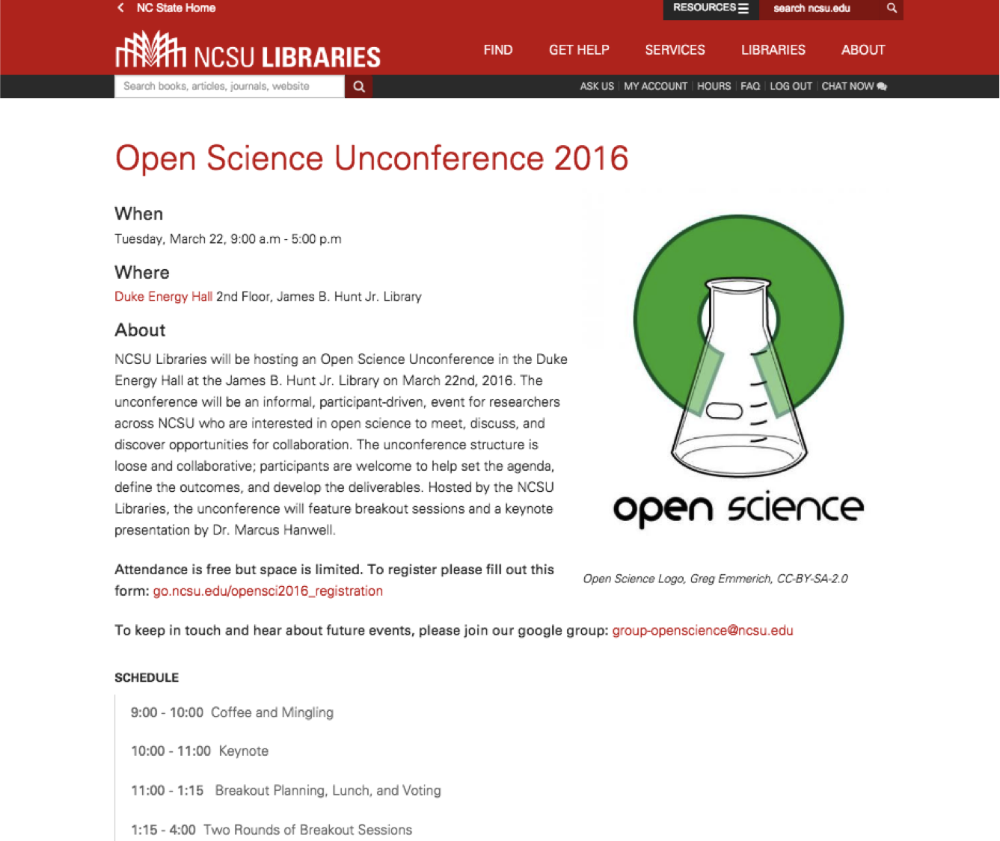

Open science: How libraries can support modern research practice
+
Supporting the modern research skillset: The summer of open science
Bret Davidson | Eka Grguric | Alison Blaine Jennifer Garrett | Lauren Di Monte
NCSU Libraries
Agenda
- Open science as problem space
- Open science as modern research practice
- Open science at NC State
- Vagrant, Ansible, & Python

Nullius in Verba
"Take nobody's word for it."
Only 6 out of 53 “landmark" cancer studies could be reproduced.
Nature, www.nature.com/nature/journal/v483/n7391/full/483531a.htmlHow Science Goes Wrong
"Too much trusting, not enough verifying."
Economist, www.economist.com/news/leaders/21588069-scientific-research-has-changed-world-now-it-needs-change-itself-how-science-goes-wrongReproducibility Crisis
Empirical estimates suggest most published medical research is true.
arXiv, arxiv.org/abs/1301.3718Open Science can increase reproducibility.
What is Open Science?
- Open Access
- Open Data
- Open Notebooks
- Open Source
Open Science is a return to first principles of scientific practice.
Open practices require new skillsets.
The way that research is
carried out.
The way that research is
disseminated.
How digital technologies are affecting the practice of science.
Paul David
Economist / Historian
The Knowledge Economy
Five schools of thought
by Sönke Bartling & Sascha Friesike
Editors, http://book.openingscience.org/
The Five Schools of Thought
Infrastructure
tech. architecture
Publicaccessibility of knowledge creation + citizen science
Measurement
alt. impact measurement
Democratic
access to knowledge
Pragmatic
collaborative research
Recent Events


Why Libraries?

Aligns with core library values
- information access
- peer review
- community-based knowledge creation
- the preservation and dissemination of research
Libraries are champions of open source
Libraries
are about
supporting their users
Academic Libraries
are about
supporting research practice
Ongoing disruption by digital technologies in modern research practice
Hypothetical Open Science Workflow

101 Innovations in Scholarly Communication, https://innoscholcomm.silk.co/
Policy Shifts
in support of open
Ecosystem of Support for Modern Research Practice at NCSU Libraries


The NCSU Libraries' Open Science Initiative
Goals
- explore open science practice at NCSU
- better understand researcher needs in context
We took a non-prescriptive user-centered approach.
Creating opportunities for communication.
Open Science Unconference
Follow-up Informal Interviews
Modern Research Skills Gap
Insufficient Incentives

Goals
- Support modern research practice through hands on skill building
- Provide networking opportunities
- Increase visibility of library spaces & services
Skills
- Scholarly identity creation
- Scientific computing
- Building a website
- Data harvesting
- Code collaboration
Tools
- Open source software
- Virtual machines
The Planning Team
(Representation from Digital Library Initiatives, Makerspace, Research & Information Services, Libraries Fellows)
Ekatarina [Eka] Grguric (Project Lead)
Lauren Di Monte (Project Manager)
Alison Blaine (Content Development)
Bret Davidson (Technical Lead)
Jennifer Garrett (Community Development)
Summer of Open Science
- Workshops
- Intro to the Command Line Interface
- Web Scraping with Python
- Understand and Build Your Scholarly Identity
- Scientific Computing with Python & Raspberry Pi
- Build Your Scholarly Website the Easy Way
- Events
- Meetups
- End-of-Summer Showcase
Workshop Goals
- Skills for introductory-level users
- Hands-on practice
- Provide resources and opportunities for going deeper
Workshop Structure
- Brief presentation with contextual overview
- Activities
- Roving instruction support and live demo from instructor
- Instruction handouts to allow for work at own pace
In-Workshop Logistics
- Shared materials folder on Google Drive
- Laptops provided via a laptop cart
- Evaluation forms for feedback
- At least 2 instructors

Marketing
- Slide on library front page linking to event website with logo
- Emails to various listservs
- E-board advertisements on campus
- Press release

Scientific Computing with Python & Raspberry Pi:
40 person waitlist
Meetups
- Monthly informal networking and discussion
- Held at a coffee shop on campus
- Rich conversations, although small numbers
Final Showcase
- Food & mingling
- Lightning talks
- Agriculture and Accidents: Digital Learning in Summer 2016
- Modeling Individual Developer Concept Knowledge Using Public Git Repositories
- SciBridge: Bringing together African and U.S. scientists
Takeaways

Interdisciplinary Need:over 40 departments across ~16 colleges
Takeaways
- "Open Science" attracted non-scientists as well as scientists
- High demand for introductory coding skills (Python)
- Interest among graduate students for opportunities for interdisciplinary research sharing
- Summer presents interesting opportunities and challenges
Web Scraping with Python
Technical workshops are ripe for disaster.
What could go wrong?
- OS images reset overnight
- Improper permissions
- Network connectivity issues
- Python 2 vs Python 3
- Missing packages
This is not theoretical!
Image courtesy of Tumblr, animisensa
Instructor Challenges
- Consistency across user environments
- Consistency of course materials
- Time to provision computing environments
- Ease of collaboration
Student Challenges
- Basic Python data types and structures
- Python module system
- Retrieve a web page with Requests
- Parse content with Beautiful Soup
- Generate a word cloud with matplotlib
- Control Structures
- Exception Handling
- Working with file system
Many Options
- Custom OS Images
- Custom Distributions, e.g. Anaconda
- Interactive Environments, e.g. Jupyter
Our Approach
- Vagrant for managing OS
- Ansible for provisioning and configuration
- Course or lab specific packages and resources
Easy!
- Install Vagrant
- Install VirtualBox
- Clone project repo
- `vagrant up`
- `vagrant ssh`
- Execute code!
This is reproducible computing!
Benefits
- Consistent environment user to user
- Single target for course materials
- Faster provisioniong for new workshops
- Reproducible
Rise of Scholarly Code
Researcher Challenges
- Consistency across lab environments
- Ability to see results of code
- Consistency across time
- Ease of collaboration
github.com/NCSU-Libraries/scholars-backpack

Features
- Python 3
- Jupyter Notebook Server
- R and R Studio
- Example Notebooks
Benefits
- Decrease overhead
- Improve reproducibility
- Encourage collaboration
Vagrant
Create and configure lightweight, reproducible, and portable development environments.
Usage
- Easy installation through binary package.
- Flexible configuration via text file.
- Single command: `vagrant up`

Ansible
"Automation engine" for provisioning and configuration management.
Provisioning
"To make something available."
Installation!
Configuration Management
"Establish and maintain consistency of an environment."
playbook.yml
Future Work
Richer Environment
- Broader scientific computing
- Improved adherance to best practices
- Docker containers for portability
Embedded Use
- Curricular use
- Laboratory use
Summary
Emphasis on reproducibility has ignited a shift toward new practices.
With these new practices come new requirements for researchers.
Reproducible and portable computing environments are critical for future success.
Tools like Vagrant and Ansible can help researchers develop the scientific environments they need to be productive.
Thanks!
eka_grguric@ncsu.edu | @egrguric
alison_blaine@ncsu.edu | @Bigggggg_Al
bret_davidson@ncsu.edu | @brtdvdsn